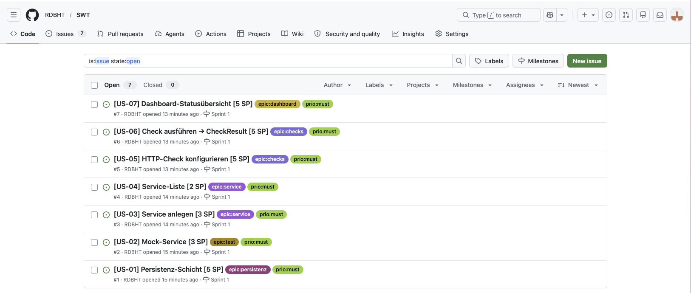
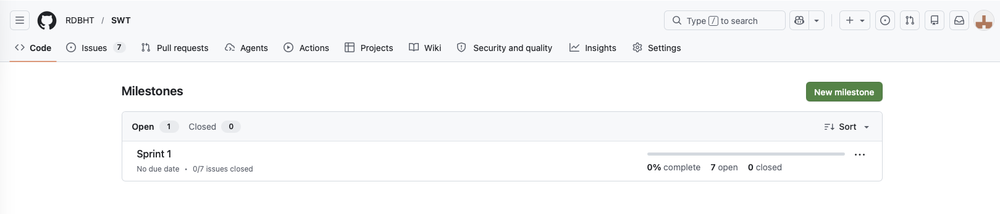

VOR-E1 — Vorgehensmodell für Projekt wählen
Einsendeaufgabe VOR-E1 (Softwaretechnik)
Für das durchgehende Projekt IT-Service-Monitor wird ein Vorgehensmodell gewählt, recherchiert, ein Tool erprobt, die Spotify-Videos ausgewertet und der erste Backlog samt erster Iteration geplant.
| Ziel | Vorgehensmodell wählen, Backlog erstellen, erste Iteration planen |
|---|---|
| Projekt | IT-Service-Monitor (MVP) |
| Modell | Scrum — für ein Ein-Personen-Projekt skaliert |
| Tool | GitHub Issues + Milestones (Repo RDBHT/SWT) |
| Status | abgeschlossen |
Teil 1 — Vorgehensmodell: Scrum
Gewählt wird Scrum: Das MVP wird in festen Sprints inkrementell ausgeliefert, die Aufgabe verlangt ausdrücklich eine geplante Iteration (= Sprint), und Scrum-Artefakte sind klar dokumentierbar. Da das Projekt faktisch ein Ein-Personen-Vorhaben ist, wird Scrum bewusst skaliert (Rollen in Personalunion, Daily als kurze Selbst-Synchronisation). Kanban bleibt als Sprint-Board mit WIP-Limit präsent (Scrumban).
Teil 2 — Recherche
Scrum ist ein empirisches Rahmenwerk mit festen Rollen, Events und Artefakten; Kanban eine evolutionäre Flussmethode mit WIP-Limits. Der Kernunterschied:
| Aspekt | Scrum | Kanban |
|---|---|---|
| Kadenz | feste Sprints | kontinuierlicher Fluss |
| Rollen | drei definierte Rollen | keine vorgeschrieben |
| Zentrale Metrik | Velocity | Cycle Time / Durchsatz |
| Stärke bei | Produktaufbau mit Zielbild | Betrieb und Wartung |
Teil 3 — Tool-Experiment: GitHub Issues
Erprobt wurde GitHub Issues + Milestones im bestehenden Repo — kein separates Projekt nötig. Backlog-Items werden als Issues geführt, der Milestone bildet den Sprint ab; Issues sind öffentlich verlinkbar und damit beweisbar.
Nachweis — öffentlich im Repo: Issues · Milestone „Sprint 1".


Teil 4 — Spotify-Beobachtungen
Was mir bei „Spotify Engineering Culture" Teil 1 und 2 (Kniberg & Ivarsson, 2014) aufgefallen ist:
- Überrascht hat mich, dass kein Modell vorgeschrieben wird — jedes Squad wählt selbst; mein Reflex zu standardisieren wurde geradegerückt.
- „Aligned Autonomy" fand ich das stärkste Bild — Führung gibt das Problem vor, das Team die Lösung; genau die Spannung aus meinem Alltag.
- „Healthy culture heals broken process" blieb am meisten hängen — deckt sich mit meiner Erfahrung: Kultur trägt über Prozesslücken hinweg.
- Die Fehlerkultur fand ich provokant, aber durchdacht — „make mistakes faster" meint nicht Sorglosigkeit, sondern billigen, begrenzten Schaden.
- Skeptisch bin ich bei der Übertragbarkeit — das Bild von 2014 ist idealisiert; die Prinzipien lassen sich übernehmen, die Struktur nicht 1:1.
Teil 5 — Backlog & Sprint 1
Der Product Backlog umfasst 7 Epics und 17 priorisierte User Stories mit Akzeptanzkriterien und Story-Point-Schätzung (62 SP gesamt). Sprint Goal:
Ein Service kann angelegt, mit einem HTTP-Check versehen und manuell geprüft werden; das Ergebnis wird gespeichert und sein Status im Dashboard angezeigt.
Sprint-1-Backlog — vertikaler Durchstich über alle Schichten:
| ID | User Story | SP |
|---|---|---|
| US-01 | Persistenz-Schicht | 5 |
| US-02 | Mock-Service | 3 |
| US-03 | Service anlegen | 3 |
| US-04 | Service-Liste | 2 |
| US-05 | HTTP-Check konfigurieren | 5 |
| US-06 | Check ausführen → CheckResult | 5 |
| US-07 | Dashboard-Statusübersicht | 5 |
| Forecast | 28 |